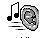

InStages Musical Theater Company presents
The Gift of the Magi
Adaptation of the O. Henry short story by David Mauriello
Music & Lyrics by Robert Johnson
Orchestrations and Musical Direction by Tim Evans
Directed by D.J. Salisbury
Cast:
Stephen Crampton - Jim
Natascha Corrigan - Della
Dan Dowling - Sofrone
Beth Gotha - Mrs. Walsh
Jeanine Belcastro - Trudi
Steve Malatesta - The Dandy
Live Recording Mixed and Mastered by
Good Dog Productions 978-741-8526

WINDOWSH.WAV
(22050 Hz / 16 Bit / Mono 1.0 Mb)
WINDOWSH.RA
(96 Kb)